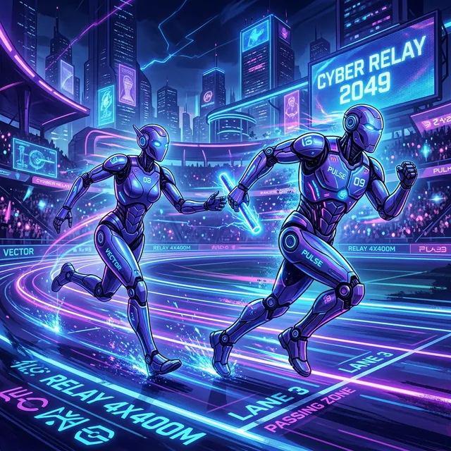

Claude CodeとAntigravityのリレープレー ～マルチエージェントデモをAI2本で完走した話～
認証エラー → マルチエージェント起動 → レート制限 → バトンタッチ → 完走。全部記録する

はじめに
「マルチエージェントって実際どう動くんだろう」という純粋な好奇心から始まったデモ実行が、 思わぬ形で2つのAIツールのリレーになりました。
Claude Codeで4エージェント並行のダッシュボードデモを走らせ、 レート制限で止まったところをAIエージェントフレームワーク「Antigravity」にバトンタッチ。 同じサーバーとUIを再利用してデモを完走させるまでの全記録です。
この記事の登場ツール：
・Claude Code：AnthropicのAI搭載CLIツール
・Antigravity：Claude CodeなどのAI CLIツールと組み合わせて使えるAIエージェントフレームワーク（エージェントがコード実行・ファイル操作・調査を自律的に行う）
1. 起動直後の認証エラー
その日、Claude Codeを起動するといきなり認証エラーが出ました。 エラーメッセージを見ると、セッションの有効期限切れが原因のようです。
CLIから /login コマンドで再ログインを試みたところ、
ブラウザが開いて認証フローが走り、無事に接続が復旧しました
（環境によっては追加の設定が必要な場合もあります）。
メモ：
認証エラーが出たらまず /login を試してみる価値があります。
ただし環境・バージョン・ネットワーク状況によって挙動は異なるため、
公式ドキュメントを確認するのが確実です。
2. マルチエージェントダッシュボードデモを起動
マルチエージェントとは何か
通常のAI利用は「ユーザー → AI → 回答」の一対一のやり取りです。 マルチエージェントは、オーケストレーター（指揮者）が大きなタスクを複数のサブタスクに分解し、 各エージェントに割り当て、それぞれの結果を統合して最終的な回答を生成するしくみです。
人間で言えば、プロジェクトマネージャーが仕事を各担当者に振り分け、 それぞれの成果物をまとめてクライアントに提出するようなイメージです。 並行して動くため、単一エージェントより大幅に速く、複雑なタスクをこなせます。
今回のデモ構成
- オーケストレーター：1体（タスク分解・結果統合担当）
- サブエージェント：4体（PCの各領域を並行調査）
- 可視化：Python HTTPサーバー + ブラウザUI（リアルタイムダッシュボード）
ダッシュボードの構成
Claude Codeがローカルで Python HTTP サーバーを立ち上げ、 ブラウザで開くとリアルタイムで各エージェントの状態が可視化されるUIが表示されました。 どのエージェントが何を調査しているか、完了したタスクはどれかが一目でわかります。
# Python HTTPサーバー起動（Claude Codeが自動生成・実行）
python -m http.server 8080
# ブラウザで確認
# http://localhost:8080/dashboard4エージェントがそれぞれ独立してPC調査を進め、 結果がリアルタイムでダッシュボードに反映されていく様子はなかなか壮観でした。 「AIが自分で仕事を分担して並行で動いている」のを目の当たりにすると、 単純なチャットボットとは別物だと実感できます。
3. レート制限の壁に当たる
デモが半分ほど進んだところで、Claude Codeが止まりました。 画面には「Rate limit exceeded」のメッセージ。
Claude Codeのレート制限について：
Claude Codeは5時間ローリングウィンドウでトークン消費量を管理しています。
マルチエージェント実行は通常の会話と比べて10〜100倍のトークンを消費するため、
レート制限に引っかかりやすい特性があります。
4エージェント並行だと、オーケストレーターが各エージェントに渡すコンテキスト、
各エージェントの処理、結果の統合と、それぞれでトークンが積み上がっていきます。
5時間待てば制限は解除されますが、「せっかくサーバーもUIも動いているのに、 ここで中断するのはもったいない」と思いました。 そこで思いついたのが、別のAIツールへのバトンタッチです。
4. Antigravityにバトンタッチ
Antigravityとは
Antigravity はClaude CodeなどのAI CLIツールと組み合わせて使えるAIエージェントフレームワークです。 単なるAIチャットではなく、エージェントがコードの実行、ファイルの読み書き、 ターミナル操作、Webブラウジングまで自律的に行えます。
Claude Codeとは独立したレート制限を持っているため、 Claude Codeが止まったタイミングで引き継ぎが可能でした。
引き継ぎはサーバーとUIをそのまま使い回す
Claude Codeが立ち上げたPython HTTPサーバーはまだ動いています。 Antigravityのターミナルから同じポートへアクセスし、 残りのエージェントタスクを続行する形で引き継ぎができました。
バトンタッチがうまくいった理由：
① サーバーがプロセスとして独立して動いていた（Claude Code終了の影響を受けない）
② UIがブラウザで開いたままだった（状態が保持されている）
③ Antigravityがターミナル操作と同じコマンドを実行できる
Antigravityでデモ完走
Antigravityに残りのタスクを引き継いでもらい、無事にデモが完走しました。 ダッシュボード上の全エージェントのタスクが「完了」になった瞬間は、 2つのAIがリレーを繋いで一つのゴールに辿り着いた感覚があり、 なかなか面白い体験でした。
5. 調査結果をナレッジとしてClaude Codeにも共有
デモの目的はPC環境の調査でした。Antigravityがまとめた調査結果には ホームディレクトリの構造、インストール済みツール環境、PATH設定などが含まれていました。
これをMarkdownファイルとして保存し、Claude Codeのプロジェクトナレッジに取り込むことで、 次にClaude Codeを使うときも同じ調査を繰り返さずに済みます。
# 調査結果の例（Antigravityがまとめた内容の一部）
## ホームディレクトリ構造
- Documents/私のナレッジを蓄積/ ← メインの作業フォルダ
- .claude/ ← Claude Code設定・スキル
- .agent/skills/ ← AntiGravityスキル
## ツール環境
- Node.js: インストール済み
- Python: インストール済み
- Git: Git Bash経由
- jq: winget経由でインストール済み
AIツール間のナレッジ共有のポイント：
AIエージェントはセッションをまたいで記憶を保持しません。
調査結果をファイルとして出力し、次のセッションで読み込ませることが
実質的な「記憶の引き継ぎ」になります。
どのAIツールを使うときも、重要な情報はファイルに落とすのが鉄則です。
6. 今回の体験から学んだこと
まとめ：AIツールのリレー活用で気づいたこと
- マルチエージェントはトークン消費が多い — 5時間ローリングウィンドウのレート制限を念頭に置いて実行計画を立てる
- サーバーとUIはプロセスとして独立している — AIツールが変わってもローカルサーバーはそのまま使い回せる
- 複数のAIツールを組み合わせる発想が有効 — Claude CodeとAntigravityはそれぞれ独立したレート制限を持つため、 一方が止まったときに他方で続行できる
- 調査結果はファイルで残す — AIセッション間のナレッジ共有はファイル経由が基本
レート制限との付き合い方
マルチエージェントを本格的に使うなら、レート制限は避けられない現実です。 対策としては以下が現実的です：
- エージェント数を絞る（4体 → 2体で試してから増やす）
- タスクを小さく区切って複数セッションに分ける
- 今回のように別のAIツールをバックアップとして用意しておく
- 制限解除を待って再開する（5時間ローリングウィンドウなので最長5時間）
「AIが止まったら別のAIに頼む」というリレー戦略は、 思ったより実用的でした。ツールを一つに絞らず、複数を使いこなす視点が これからのAI活用では重要になってくると感じています。